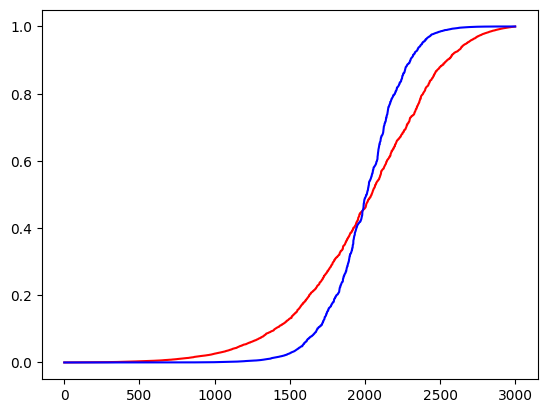

m = nn.Linear(10, 2)
inp = torch.randn(3, 10)
test_module_to_torchscript(m, inp, trace=True, script=True, serialize=True, verbose=True)output.shape: torch.Size([3, 2])
Tracing...
...Linear has been successfully traced 😃
TrueHelper functions used to build PyTorch timeseries models.
def test_module_to_torchscript(
m:Module, # The PyTorch module to be tested.
inputs:Tensor, # A tensor or tuple of tensors representing the inputs to the model.
trace:bool=True, # If `True`, attempts to trace the model. Defaults to `True`.
script:bool=True, # If `True`, attempts to script the model. Defaults to `True`.
serialize:bool=True, # If `True`, saves and loads the traced/scripted module to ensure it can be serialized. Defaults to `True`.
verbose:bool=True, # If `True`, prints detailed information about the tracing and scripting process. Defaults to `True`.
):
Tests if a PyTorch module can be correctly traced or scripted and serialized
output.shape: torch.Size([3, 2])
Tracing...
...Linear has been successfully traced 😃
TrueCall self as a function.
Same as nn.Module, but no need for subclasses to call super().__init__
Smooth ReLU activation function based on https://arxiv.org/pdf/2202.06499.pdf
Base class for all neural network modules.
Your models should also subclass this class.
Modules can also contain other Modules, allowing them to be nested in a tree structure. You can assign the submodules as regular attributes::
import torch.nn as nn
import torch.nn.functional as F
class Model(nn.Module):
def __init__(self) -> None:
super().__init__()
self.conv1 = nn.Conv2d(1, 20, 5)
self.conv2 = nn.Conv2d(20, 20, 5)
def forward(self, x):
x = F.relu(self.conv1(x))
return F.relu(self.conv2(x))Submodules assigned in this way will be registered, and will also have their parameters converted when you call :meth:to, etc.
.. note:: As per the example above, an __init__() call to the parent class must be made before assignment on the child.
:ivar training: Boolean represents whether this module is in training or evaluation mode. :vartype training: bool
Conv1d with padding=‘same’
Pads the input tensor boundaries with a constant value.
For N-dimensional padding, use :func:torch.nn.functional.pad().
Args: padding (int, tuple): the size of the padding. If is int, uses the same padding in both boundaries. If a 2-tuple, uses (:math:\text{padding\_left}, :math:\text{padding\_right})
Shape: - Input: :math:(C, W_{in}) or :math:(N, C, W_{in}). - Output: :math:(C, W_{out}) or :math:(N, C, W_{out}), where
:math:`W_{out} = W_{in} + \text{padding\_left} + \text{padding\_right}`Examples::
>>> # xdoctest: +IGNORE_WANT("non-deterministic")
>>> m = nn.ConstantPad1d(2, 3.5)
>>> input = torch.randn(1, 2, 4)
>>> input
tensor([[[-1.0491, -0.7152, -0.0749, 0.8530],
[-1.3287, 1.8966, 0.1466, -0.2771]]])
>>> m(input)
tensor([[[ 3.5000, 3.5000, -1.0491, -0.7152, -0.0749, 0.8530, 3.5000,
3.5000],
[ 3.5000, 3.5000, -1.3287, 1.8966, 0.1466, -0.2771, 3.5000,
3.5000]]])
>>> m = nn.ConstantPad1d(2, 3.5)
>>> input = torch.randn(1, 2, 3)
>>> input
tensor([[[ 1.6616, 1.4523, -1.1255],
[-3.6372, 0.1182, -1.8652]]])
>>> m(input)
tensor([[[ 3.5000, 3.5000, 1.6616, 1.4523, -1.1255, 3.5000, 3.5000],
[ 3.5000, 3.5000, -3.6372, 0.1182, -1.8652, 3.5000, 3.5000]]])
>>> # using different paddings for different sides
>>> m = nn.ConstantPad1d((3, 1), 3.5)
>>> m(input)
tensor([[[ 3.5000, 3.5000, 3.5000, 1.6616, 1.4523, -1.1255, 3.5000],
[ 3.5000, 3.5000, 3.5000, -3.6372, 0.1182, -1.8652, 3.5000]]])Same padding formula as used in Tensorflow
conv1d layer with padding=‘same’, ‘valid’, or any integer (defaults to ‘same’)
Conv2d with padding=‘same’
Pads the input tensor boundaries with a constant value.
For N-dimensional padding, use :func:torch.nn.functional.pad().
Args: padding (int, tuple): the size of the padding. If is int, uses the same padding in all boundaries. If a 4-tuple, uses (:math:\text{padding\_left}, :math:\text{padding\_right}, :math:\text{padding\_top}, :math:\text{padding\_bottom})
Shape: - Input: :math:(N, C, H_{in}, W_{in}) or :math:(C, H_{in}, W_{in}). - Output: :math:(N, C, H_{out}, W_{out}) or :math:(C, H_{out}, W_{out}), where
:math:`H_{out} = H_{in} + \text{padding\_top} + \text{padding\_bottom}`
:math:`W_{out} = W_{in} + \text{padding\_left} + \text{padding\_right}`Examples::
>>> # xdoctest: +IGNORE_WANT("non-deterministic")
>>> m = nn.ConstantPad2d(2, 3.5)
>>> input = torch.randn(1, 2, 2)
>>> input
tensor([[[ 1.6585, 0.4320],
[-0.8701, -0.4649]]])
>>> m(input)
tensor([[[ 3.5000, 3.5000, 3.5000, 3.5000, 3.5000, 3.5000],
[ 3.5000, 3.5000, 3.5000, 3.5000, 3.5000, 3.5000],
[ 3.5000, 3.5000, 1.6585, 0.4320, 3.5000, 3.5000],
[ 3.5000, 3.5000, -0.8701, -0.4649, 3.5000, 3.5000],
[ 3.5000, 3.5000, 3.5000, 3.5000, 3.5000, 3.5000],
[ 3.5000, 3.5000, 3.5000, 3.5000, 3.5000, 3.5000]]])
>>> # using different paddings for different sides
>>> m = nn.ConstantPad2d((3, 0, 2, 1), 3.5)
>>> m(input)
tensor([[[ 3.5000, 3.5000, 3.5000, 3.5000, 3.5000],
[ 3.5000, 3.5000, 3.5000, 3.5000, 3.5000],
[ 3.5000, 3.5000, 3.5000, 1.6585, 0.4320],
[ 3.5000, 3.5000, 3.5000, -0.8701, -0.4649],
[ 3.5000, 3.5000, 3.5000, 3.5000, 3.5000]]])Same padding formula as used in Tensorflow
bs = 2
c_in = 3
c_out = 5
h = 16
w = 20
t = torch.rand(bs, c_in, h, w)
test_eq(Conv2dSame(c_in, c_out, ks=3, stride=1, dilation=1, bias=False)(t).shape, (bs, c_out, h, w))
test_eq(Conv2dSame(c_in, c_out, ks=(3, 1), stride=1, dilation=1, bias=False)(t).shape, (bs, c_out, h, w))
test_eq(Conv2dSame(c_in, c_out, ks=3, stride=(1, 1), dilation=(2, 2), bias=False)(t).shape, (bs, c_out, h, w))
test_eq(Conv2dSame(c_in, c_out, ks=3, stride=(2, 2), dilation=(1, 1), bias=False)(t).shape, (bs, c_out, h//2, w//2))
test_eq(Conv2dSame(c_in, c_out, ks=3, stride=(2, 2), dilation=(2, 2), bias=False)(t).shape, (bs, c_out, h//2, w//2))
test_eq(Conv2d(c_in, c_out, ks=3, padding='same', stride=1, dilation=1, bias=False)(t).shape, (bs, c_out, h, w))Applies a 1D convolution over an input signal composed of several input planes.
In the simplest case, the output value of the layer with input size :math:(N, C_{\text{in}}, L) and output :math:(N, C_{\text{out}}, L_{\text{out}}) can be precisely described as:
.. math:: (N_i, C_{j}) = (C{j}) + {k = 0}^{C_{in} - 1} (C_{_j}, k) (N_i, k)
where :math:\star is the valid cross-correlation_ operator, :math:N is a batch size, :math:C denotes a number of channels, :math:L is a length of signal sequence.
This module supports :ref:TensorFloat32<tf32_on_ampere>.
On certain ROCm devices, when using float16 inputs this module will use :ref:different precision<fp16_on_mi200> for backward.
:attr:stride controls the stride for the cross-correlation, a single number or a one-element tuple.
:attr:padding controls the amount of padding applied to the input. It can be either a string {‘valid’, ‘same’} or a tuple of ints giving the amount of implicit padding applied on both sides.
:attr:dilation controls the spacing between the kernel points; also known as the à trous algorithm. It is harder to describe, but this link_ has a nice visualization of what :attr:dilation does.
:attr:groups controls the connections between inputs and outputs. :attr:in_channels and :attr:out_channels must both be divisible by :attr:groups. For example,
in_channels, each input channel is convolved with its own set of filters (of size :math:\frac{\text{out\_channels}}{\text{in\_channels}}).Note: When groups == in_channels and out_channels == K * in_channels, where K is a positive integer, this operation is also known as a “depthwise convolution”.
In other words, for an input of size :math:`(N, C_{in}, L_{in})`,
a depthwise convolution with a depthwise multiplier `K` can be performed with the arguments
:math:`(C_\text{in}=C_\text{in}, C_\text{out}=C_\text{in} \times \text{K}, ..., \text{groups}=C_\text{in})`.Note: In some circumstances when given tensors on a CUDA device and using CuDNN, this operator may select a nondeterministic algorithm to increase performance. If this is undesirable, you can try to make the operation deterministic (potentially at a performance cost) by setting torch.backends.cudnn.deterministic = True. See :doc:/notes/randomness for more information.
Note: padding='valid' is the same as no padding. padding='same' pads the input so the output has the shape as the input. However, this mode doesn’t support any stride values other than 1.
Note: This module supports complex data types i.e. complex32, complex64, complex128.
Args: in_channels (int): Number of channels in the input image out_channels (int): Number of channels produced by the convolution kernel_size (int or tuple): Size of the convolving kernel stride (int or tuple, optional): Stride of the convolution. Default: 1 padding (int, tuple or str, optional): Padding added to both sides of the input. Default: 0 dilation (int or tuple, optional): Spacing between kernel elements. Default: 1 groups (int, optional): Number of blocked connections from input channels to output channels. Default: 1 bias (bool, optional): If True, adds a learnable bias to the output. Default: True padding_mode (str, optional): 'zeros', 'reflect', 'replicate' or 'circular'. Default: 'zeros'
Shape: - Input: :math:(N, C_{in}, L_{in}) or :math:(C_{in}, L_{in}) - Output: :math:(N, C_{out}, L_{out}) or :math:(C_{out}, L_{out}), where
.. math::
L_{out} = \left\lfloor\frac{L_{in} + 2 \times \text{padding} - \text{dilation}
\times (\text{kernel\_size} - 1) - 1}{\text{stride}} + 1\right\rfloorAttributes: weight (Tensor): the learnable weights of the module of shape :math:(\text{out\_channels}, \frac{\text{in\_channels}}{\text{groups}}, \text{kernel\_size}). The values of these weights are sampled from :math:\mathcal{U}(-\sqrt{k}, \sqrt{k}) where :math:k = \frac{groups}{C_\text{in} * \text{kernel\_size}} bias (Tensor): the learnable bias of the module of shape (out_channels). If :attr:bias is True, then the values of these weights are sampled from :math:\mathcal{U}(-\sqrt{k}, \sqrt{k}) where :math:k = \frac{groups}{C_\text{in} * \text{kernel\_size}}
Examples::
>>> m = nn.Conv1d(16, 33, 3, stride=2)
>>> input = torch.randn(20, 16, 50)
>>> output = m(input).. _cross-correlation: https://en.wikipedia.org/wiki/Cross-correlation
.. _link: https://github.com/vdumoulin/conv_arithmetic/blob/master/README.md
conv1d layer with padding=‘same’, ‘causal’, ‘valid’, or any integer (defaults to ‘same’)
bs = 2
c_in = 3
c_out = 5
seq_len = 512
t = torch.rand(bs, c_in, seq_len)
dilation = 1
test_eq(CausalConv1d(c_in, c_out, ks=3, dilation=dilation)(t).shape, Conv1d(c_in, c_out, ks=3, padding="same", dilation=dilation)(t).shape)
dilation = 2
test_eq(CausalConv1d(c_in, c_out, ks=3, dilation=dilation)(t).shape, Conv1d(c_in, c_out, ks=3, padding="same", dilation=dilation)(t).shape)bs = 2
ni = 3
nf = 5
seq_len = 6
ks = 3
t = torch.rand(bs, c_in, seq_len)
test_eq(Conv1d(ni, nf, ks, padding=0)(t).shape, (bs, c_out, seq_len - (2 * (ks//2))))
test_eq(Conv1d(ni, nf, ks, padding='valid')(t).shape, (bs, c_out, seq_len - (2 * (ks//2))))
test_eq(Conv1d(ni, nf, ks, padding='same')(t).shape, (bs, c_out, seq_len))
test_eq(Conv1d(ni, nf, ks, padding='causal')(t).shape, (bs, c_out, seq_len))
test_error('use kernel_size or ks but not both simultaneously', Conv1d, ni, nf, kernel_size=3, ks=3)
test_error('you need to pass a ks', Conv1d, ni, nf)Conv1d(3, 5, kernel_size=(3,), stride=(1,), padding=(1,))CausalConv1d(3, 5, kernel_size=(3,), stride=(1,))Conv1d(3, 5, kernel_size=(3,), stride=(1,))Conv1d(3, 5, kernel_size=(3,), stride=(1,))Same as nn.Module, but no need for subclasses to call super().__init__
Add coordinates to ease position identification without modifying mean and std
def ConvBlock(
ni, nf, kernel_size:NoneType=None, ks:int=3, stride:int=1, padding:str='same', bias:NoneType=None,
bias_std:float=0.01, norm:str='Batch', zero_norm:bool=False, bn_1st:bool=True, act:type=ReLU, act_kwargs:dict={},
init:str='auto', dropout:float=0.0, xtra:NoneType=None, coord:bool=False, separable:bool=False,
kwargs:VAR_KEYWORD
):
Create a sequence of conv1d (ni to nf), activation (if act_cls) and norm_type layers.
def ResBlock1dPlus(
expansion, ni, nf, coord:bool=False, stride:int=1, groups:int=1, reduction:NoneType=None, nh1:NoneType=None,
nh2:NoneType=None, dw:bool=False, g2:int=1, sa:bool=False, sym:bool=False, norm:str='Batch', zero_norm:bool=True,
act_cls:type=ReLU, ks:int=3, pool:function=AvgPool, pool_first:bool=True, kwargs:VAR_KEYWORD
):
Resnet block from ni to nh with stride
Squeeze and excitation module for 1d
Norm layer with nf features and ndim with auto init.
ConvBlock(
(0): AddCoords1d()
(1): Conv1d(4, 5, kernel_size=(5,), stride=(1,), padding=(2,), bias=False)
(2): BatchNorm1d(5, eps=1e-05, momentum=0.1, affine=True, track_running_stats=True)
(3): SiLU()
)Module grouping LayerNorm1d, Dropout and Linear layers
LinLnDrop(
(0): LayerNorm((2,), eps=1e-05, elementwise_affine=True)
(1): Dropout(p=0.5, inplace=False)
(2): Linear(in_features=2, out_features=3, bias=False)
)Same as nn.Module, but no need for subclasses to call super().__init__
Same as nn.Module, but no need for subclasses to call super().__init__
Same as nn.Module, but no need for subclasses to call super().__init__
Same as nn.Module, but no need for subclasses to call super().__init__
SoftMax layer
Same as nn.Module, but no need for subclasses to call super().__init__
Same as nn.Module, but no need for subclasses to call super().__init__
Same as nn.Module, but no need for subclasses to call super().__init__
Same as nn.Module, but no need for subclasses to call super().__init__
Same as nn.Module, but no need for subclasses to call super().__init__
Same as nn.Module, but no need for subclasses to call super().__init__
Same as nn.Module, but no need for subclasses to call super().__init__
Same as nn.Module, but no need for subclasses to call super().__init__
Same as nn.Module, but no need for subclasses to call super().__init__
Same as nn.Module, but no need for subclasses to call super().__init__
Same as nn.Module, but no need for subclasses to call super().__init__
bs = 2
nf = 5
sl = 4
t = torch.rand(bs, nf, sl)
test_eq(Permute(0,2,1)(t).shape, (bs, sl, nf))
test_eq(Max(1)(t).shape, (bs, sl))
test_eq(Transpose(1,2)(t).shape, (bs, sl, nf))
test_eq(Transpose(1,2, contiguous=True)(t).shape, (bs, sl, nf))
test_eq(View(-1, 2, 10)(t).shape, (bs, 1, 2, 10))
test_eq(Reshape(-1, 2, 10)(t).shape, (bs, 1, 2, 10))
test_eq(Reshape()(t).shape, (2, 20))
test_eq(Reshape(-1)(t).shape, (40,))
test_eq(torch.jit.script(Reshape())(t).shape, (2, 20))
Transpose(1,2), Permute(0,2,1), View(-1, 2, 10), Transpose(1,2, contiguous=True), Reshape(-1, 2, 10), Noop(Transpose(dims=1, 2).contiguous(),
Permute(dims=0, 2, 1),
View(bs, -1, 2, 10),
Transpose(dims=1, 2).contiguous(),
Reshape(bs, -1, 2, 10),
Sequential())Drop paths (Stochastic Depth) per sample (when applied in main path of residual blocks).
It’s similar to Dropout but it drops individual connections instead of nodes. Original code in https://github.com/rwightman/pytorch-image-models (timm library)
This is used to increase confidence in predictions - MixMatch paper
n_samples = 1000
n_classes = 3
t = (torch.rand(n_samples, n_classes) - .5) * 10
probas = F.softmax(t, -1)
sharpened_probas = Sharpen()(probas)
plt.plot(probas.flatten().sort().values, color='r')
plt.plot(sharpened_probas.flatten().sort().values, color='b')
plt.show()
test_gt(sharpened_probas[n_samples//2:].max(-1).values.sum().item(), probas[n_samples//2:].max(-1).values.sum().item())
Class that allows you to pass one or multiple inputs
Base class for all neural network modules.
Your models should also subclass this class.
Modules can also contain other Modules, allowing them to be nested in a tree structure. You can assign the submodules as regular attributes::
import torch.nn as nn
import torch.nn.functional as F
class Model(nn.Module):
def __init__(self) -> None:
super().__init__()
self.conv1 = nn.Conv2d(1, 20, 5)
self.conv2 = nn.Conv2d(20, 20, 5)
def forward(self, x):
x = F.relu(self.conv1(x))
return F.relu(self.conv2(x))Submodules assigned in this way will be registered, and will also have their parameters converted when you call :meth:to, etc.
.. note:: As per the example above, an __init__() call to the parent class must be made before assignment on the child.
:ivar training: Boolean represents whether this module is in training or evaluation mode. :vartype training: bool
Call self as a function.
Used to perform Matrix Scaling (dirichlet=False) or Dirichlet calibration (dirichlet=True)
Used to perform Vector Scaling (dirichlet=False) or Diagonal Dirichlet calibration (dirichlet=True)
Used to perform Temperature Scaling (dirichlet=False) or Single-parameter Dirichlet calibration (dirichlet=True)
bs = 2
c_out = 3
t = torch.rand(bs, c_out)
for calibrator, cal_name in zip(['temp', 'vector', 'matrix'], ['Temp_Scale', 'Vector_Scale', 'Matrix_Scale']):
cal = get_calibrator(calibrator, n_classes=c_out)
# print(calibrator)
# print(cal.weight, cal.bias, '\n')
test_eq(cal(t), t)
test_eq(cal.__class__.__name__, cal_name)
for calibrator, cal_name in zip(['dtemp', 'dvector', 'dmatrix'], ['Temp_Scale', 'Vector_Scale', 'Matrix_Scale']):
cal = get_calibrator(calibrator, n_classes=c_out)
# print(calibrator)
# print(cal.weight, cal.bias, '\n')
test_eq(cal(t), F.log_softmax(t, dim=1))
test_eq(cal.__class__.__name__, cal_name)bs = 2
c_out = 3
t = torch.rand(bs, c_out)
test_eq(Temp_Scale()(t).shape, t.shape)
test_eq(Vector_Scale(c_out)(t).shape, t.shape)
test_eq(Matrix_Scale(c_out)(t).shape, t.shape)
test_eq(Temp_Scale(dirichlet=True)(t).shape, t.shape)
test_eq(Vector_Scale(c_out, dirichlet=True)(t).shape, t.shape)
test_eq(Matrix_Scale(c_out, dirichlet=True)(t).shape, t.shape)
test_eq(Temp_Scale()(t), t)
test_eq(Vector_Scale(c_out)(t), t)
test_eq(Matrix_Scale(c_out)(t), t)Logit Adjustment for imbalanced datasets
Drop-in replacement for AdaptiveConcatPool1d - multiplies nf by 2
Same as nn.Module, but no need for subclasses to call super().__init__
Same as nn.Module, but no need for subclasses to call super().__init__
Global Pooling layer that performs a weighted average along the temporal axis
It can be considered as a channel-wise form of local temporal attention. Inspired by the paper: Hyun, J., Seong, H., & Kim, E. (2019). Universal Pooling–A New Pooling Method for Convolutional Neural Networks. arXiv preprint arXiv:1907.11440.
Global AdaptiveWeightedAvgPool1d + Flatten
Global AdaptiveConcatPool + Flatten
Global Adaptive Pooling + Flatten
Call self as a function.
Global Weighted Average Pooling layer
Inspired by Building Efficient CNN Architecture for Offline Handwritten Chinese Character Recognition https://arxiv.org/pdf/1804.01259.pdf
Call self as a function.
A sequential container.
Modules will be added to it in the order they are passed in the constructor. Alternatively, an OrderedDict of modules can be passed in. The forward() method of [Sequential](https://timeseriesAI.github.io/tsai/models.tabfusiontransformer.html#sequential) accepts any input and forwards it to the first module it contains. It then “chains” outputs to inputs sequentially for each subsequent module, finally returning the output of the last module.
The value a [Sequential](https://timeseriesAI.github.io/tsai/models.tabfusiontransformer.html#sequential) provides over manually calling a sequence of modules is that it allows treating the whole container as a single module, such that performing a transformation on the [Sequential](https://timeseriesAI.github.io/tsai/models.tabfusiontransformer.html#sequential) applies to each of the modules it stores (which are each a registered submodule of the [Sequential](https://timeseriesAI.github.io/tsai/models.tabfusiontransformer.html#sequential)).
What’s the difference between a [Sequential](https://timeseriesAI.github.io/tsai/models.tabfusiontransformer.html#sequential) and a :class:torch.nn.ModuleList? A ModuleList is exactly what it sounds like–a list for storing Module s! On the other hand, the layers in a [Sequential](https://timeseriesAI.github.io/tsai/models.tabfusiontransformer.html#sequential) are connected in a cascading way.
Example::
# Using Sequential to create a small model. When `model` is run,
# input will first be passed to `Conv2d(1,20,5)`. The output of
# `Conv2d(1,20,5)` will be used as the input to the first
# `ReLU`; the output of the first `ReLU` will become the input
# for `Conv2d(20,64,5)`. Finally, the output of
# `Conv2d(20,64,5)` will be used as input to the second `ReLU`
model = nn.Sequential(
nn.Conv2d(1, 20, 5), nn.ReLU(), nn.Conv2d(20, 64, 5), nn.ReLU()
)
# Using Sequential with OrderedDict. This is functionally the
# same as the above code
model = nn.Sequential(
OrderedDict(
[
("conv1", nn.Conv2d(1, 20, 5)),
("relu1", nn.ReLU()),
("conv2", nn.Conv2d(20, 64, 5)),
("relu2", nn.ReLU()),
]
)
)Global Adaptive Pooling layer inspired by Attentional Pooling for Action Recognition https://arxiv.org/abs/1711.01467
bs, c_in, seq_len = 16, 1, 50
c_out = 3
t = torch.rand(bs, c_in, seq_len)
test_eq(GAP1d()(t).shape, (bs, c_in))
test_eq(GACP1d()(t).shape, (bs, c_in*2))
bs, c_in, seq_len = 16, 4, 50
t = torch.rand(bs, c_in, seq_len)
test_eq(GAP1d()(t).shape, (bs, c_in))
test_eq(GACP1d()(t).shape, (bs, c_in*2))
test_eq(GAWP1d(c_in, seq_len, n_layers=2, ln=False, dropout=0.5, act=nn.ReLU(), zero_init=False)(t).shape, (bs, c_in))
test_eq(GAWP1d(c_in, seq_len, n_layers=2, ln=False, dropout=0.5, act=nn.ReLU(), zero_init=False)(t).shape, (bs, c_in))
test_eq(GAWP1d(c_in, seq_len, n_layers=1, ln=False, dropout=0.5, zero_init=False)(t).shape, (bs, c_in))
test_eq(GAWP1d(c_in, seq_len, n_layers=1, ln=False, dropout=0.5, zero_init=True)(t).shape, (bs, c_in))
test_eq(AttentionalPool1d(c_in, c_out)(t).shape, (bs, c_out, 1))Same as nn.Module, but no need for subclasses to call super().__init__
t = torch.arange(24).reshape(2, 3, 4).float()
test_eq(PoolingLayer('cls', token=True, seq_last=True)(t), tensor([[ 0., 4., 8.], [12., 16., 20.]]))
test_eq(PoolingLayer('max', token=True, seq_last=True)(t), tensor([[ 3., 7., 11.], [15., 19., 23.]]))
test_close(PoolingLayer('mean', token=True, seq_last=True)(t), tensor([[ 2., 6., 10.], [14., 18., 22.]]))
test_close(PoolingLayer('max-mean', token=True, seq_last=True)(t), tensor([[ 3., 7., 11., 2., 6., 10.],
[15., 19., 23., 14., 18., 22.]]))
test_close(PoolingLayer('flatten', token=True, seq_last=True)(t), tensor([[ 1., 2., 3., 5., 6., 7., 9., 10., 11.],
[13., 14., 15., 17., 18., 19., 21., 22., 23.]]))
test_eq(PoolingLayer('linear', seq_len=4, token=True, seq_last=True)(t).shape, (2, 3))
test_eq(PoolingLayer('max', token=False, seq_last=True)(t), tensor([[ 3., 7., 11.], [15., 19., 23.]]))
test_close(PoolingLayer('mean', token=False, seq_last=True)(t), tensor([[ 1.5000, 5.5000, 9.5000],
[13.5000, 17.5000, 21.5000]]))
test_close(PoolingLayer('max-mean', token=False, seq_last=True)(t), tensor([[ 3., 7., 11., 1.5000, 5.5000, 9.5000],
[15., 19., 23., 13.5000, 17.5000, 21.5000]]))
test_close(PoolingLayer('flatten', token=False, seq_last=True)(t), tensor([[ 0., 1., 2., 3., 4., 5., 6., 7., 8., 9., 10., 11.],
[12., 13., 14., 15., 16., 17., 18., 19., 20., 21., 22., 23.]]))
test_eq(PoolingLayer('linear', seq_len=4, token=False, seq_last=True)(t).shape, (2, 3))t = torch.arange(24).reshape(2, 3, 4).swapaxes(1,2).float()
test_eq(PoolingLayer('cls', token=True, seq_last=False)(t), tensor([[ 0., 4., 8.], [12., 16., 20.]]))
test_eq(PoolingLayer('max', token=True, seq_last=False)(t), tensor([[ 3., 7., 11.], [15., 19., 23.]]))
test_close(PoolingLayer('mean', token=True, seq_last=False)(t), tensor([[ 2., 6., 10.], [14., 18., 22.]]))
test_close(PoolingLayer('max-mean', token=True, seq_last=False)(t), tensor([[ 3., 7., 11., 2., 6., 10.],
[15., 19., 23., 14., 18., 22.]]))
test_close(PoolingLayer('flatten', token=True, seq_last=False)(t), tensor([[ 1., 5., 9., 2., 6., 10., 3., 7., 11.],
[13., 17., 21., 14., 18., 22., 15., 19., 23.]]))
t = torch.arange(24).reshape(2, 3, 4).swapaxes(1,2).float()
test_eq(PoolingLayer('conv1d', seq_len=4, token=False, seq_last=False)(t).shape, (2, 3))
test_eq(PoolingLayer('max', token=False, seq_last=False)(t), tensor([[ 3., 7., 11.], [15., 19., 23.]]))
test_close(PoolingLayer('mean', token=False, seq_last=False)(t), tensor([[ 1.5000, 5.5000, 9.5000],
[13.5000, 17.5000, 21.5000]]))
test_close(PoolingLayer('max-mean', token=False, seq_last=False)(t), tensor([[ 3., 7., 11., 1.5000, 5.5000, 9.5000],
[15., 19., 23., 13.5000, 17.5000, 21.5000]]))
test_close(PoolingLayer('flatten', token=False, seq_last=False)(t), tensor([[ 0., 4., 8., 1., 5., 9., 2., 6., 10., 3., 7., 11.],
[12., 16., 20., 13., 17., 21., 14., 18., 22., 15., 19., 23.]]))
test_eq(PoolingLayer('conv1d', seq_len=4, token=False, seq_last=False)(t).shape, (2, 3))Same as nn.Module, but no need for subclasses to call super().__init__
Same as nn.Module, but no need for subclasses to call super().__init__
Call self as a function.
test_eq(get_act_fn(nn.ReLU).__repr__(), "ReLU()")
test_eq(get_act_fn(nn.ReLU()).__repr__(), "ReLU()")
test_eq(get_act_fn(nn.LeakyReLU, negative_slope=0.05).__repr__(), "LeakyReLU(negative_slope=0.05)")
test_eq(get_act_fn('reglu').__repr__(), "ReGLU()")
test_eq(get_act_fn('leakyrelu', negative_slope=0.05).__repr__(), "LeakyReLU(negative_slope=0.05)")
def RevIN(
c_in:int, # #features (aka variables or channels)
affine:bool=True, # flag to incidate if RevIN has learnable weight and bias
subtract_last:bool=False, dim:int=2, # int or tuple of dimensions used to calculate mean and std
eps:float=1e-05, # epsilon - parameter added for numerical stability
):
Reversible Instance Normalization layer adapted from
Kim, T., Kim, J., Tae, Y., Park, C., Choi, J. H., & Choo, J. (2021, September). Reversible instance normalization for accurate time-series forecasting against distribution shift. In International Conference on Learning Representations. Original code: https://github.com/ts-kim/RevIN
def RevIN(
c_in:int, # #features (aka variables or channels)
affine:bool=True, # flag to incidate if RevIN has learnable weight and bias
subtract_last:bool=False, dim:int=2, # int or tuple of dimensions used to calculate mean and std
eps:float=1e-05, # epsilon - parameter added for numerical stability
):
Reversible Instance Normalization layer adapted from
Kim, T., Kim, J., Tae, Y., Park, C., Choi, J. H., & Choo, J. (2021, September). Reversible instance normalization for accurate time-series forecasting against distribution shift. In International Conference on Learning Representations. Original code: https://github.com/ts-kim/RevIN
model = RevIN(5, affine=True)
try:
scripted_model = torch.jit.script(model)
file_path = f"test_scripted_model.pt"
torch.jit.save(scripted_model, file_path)
scripted_model = torch.jit.load(file_path)
inp = ((torch.rand(16, 5, 100) - .25) * torch.Tensor([.01, .1, 1, 10, 100]).reshape(1, -1, 1)).cumsum(-1)
normed_output = model(inp, torch.tensor(True))
demormed_output = model(normed_output, torch.tensor(False))
scripted_normed_output = scripted_model(inp, torch.tensor(True))
scripted_denormed_output = scripted_model(scripted_normed_output, torch.tensor(False))
test_close(normed_output, scripted_normed_output)
test_close(demormed_output, scripted_denormed_output)
os.remove(file_path)
del scripted_model
gc.collect()
print('scripting ok')
except Exception as e:
print(f'scripting failed: {e}')scripting okCall self as a function.
bs = 16
nf = 12
c_out = 2
seq_len = 20
t = torch.rand(bs, nf, seq_len)
test_eq(create_pool_head(nf, c_out, seq_len, fc_dropout=0.5)(t).shape, (bs, c_out))
test_eq(create_pool_head(nf, c_out, seq_len, concat_pool=True, fc_dropout=0.5)(t).shape, (bs, c_out))
create_pool_head(nf, c_out, seq_len, concat_pool=True, bn=True, fc_dropout=.5)Sequential(
(0): GACP1d(
(gacp): AdaptiveConcatPool1d(
(ap): AdaptiveAvgPool1d(output_size=1)
(mp): AdaptiveMaxPool1d(output_size=1)
)
(flatten): Reshape(bs)
)
(1): LinBnDrop(
(0): BatchNorm1d(24, eps=1e-05, momentum=0.1, affine=True, track_running_stats=True)
(1): Dropout(p=0.5, inplace=False)
(2): Linear(in_features=24, out_features=2, bias=False)
)
)Call self as a function.
Call self as a function.
bs = 16
nf = 12
c_out = 2
seq_len = 20
t = torch.rand(bs, nf, seq_len)
test_eq(create_pool_plus_head(nf, c_out, seq_len, fc_dropout=0.5)(t).shape, (bs, c_out))
test_eq(create_pool_plus_head(nf, c_out, concat_pool=True, fc_dropout=0.5)(t).shape, (bs, c_out))
create_pool_plus_head(nf, c_out, seq_len, fc_dropout=0.5)Sequential(
(0): AdaptiveConcatPool1d(
(ap): AdaptiveAvgPool1d(output_size=1)
(mp): AdaptiveMaxPool1d(output_size=1)
)
(1): Reshape(bs)
(2): BatchNorm1d(24, eps=1e-05, momentum=0.1, affine=True, track_running_stats=True)
(3): Dropout(p=0.25, inplace=False)
(4): Linear(in_features=24, out_features=512, bias=False)
(5): ReLU(inplace=True)
(6): BatchNorm1d(512, eps=1e-05, momentum=0.1, affine=True, track_running_stats=True)
(7): Dropout(p=0.5, inplace=False)
(8): Linear(in_features=512, out_features=2, bias=False)
)Call self as a function.
Sequential(
(0): ConvBlock(
(0): Conv1d(12, 6, kernel_size=(1,), stride=(1,), bias=False)
(1): BatchNorm1d(6, eps=1e-05, momentum=0.1, affine=True, track_running_stats=True)
(2): ReLU()
)
(1): ConvBlock(
(0): Conv1d(6, 3, kernel_size=(1,), stride=(1,), bias=False)
(1): BatchNorm1d(3, eps=1e-05, momentum=0.1, affine=True, track_running_stats=True)
(2): ReLU()
)
(2): ConvBlock(
(0): Conv1d(3, 2, kernel_size=(1,), stride=(1,), bias=False)
(1): BatchNorm1d(2, eps=1e-05, momentum=0.1, affine=True, track_running_stats=True)
(2): ReLU()
)
(3): GAP1d(
(gap): AdaptiveAvgPool1d(output_size=1)
(flatten): Reshape(bs)
)
)Call self as a function.
Sequential(
(0): Reshape(bs)
(1): LinBnDrop(
(0): BatchNorm1d(240, eps=1e-05, momentum=0.1, affine=True, track_running_stats=True)
(1): Dropout(p=0.5, inplace=False)
(2): Linear(in_features=240, out_features=2, bias=False)
)
)Call self as a function.
Sequential(
(0): Reshape(bs)
(1): LinBnDrop(
(0): BatchNorm1d(240, eps=1e-05, momentum=0.1, affine=True, track_running_stats=True)
(1): Dropout(p=0.5, inplace=False)
(2): Linear(in_features=240, out_features=2, bias=False)
)
)Call self as a function.
Sequential(
(0): LastStep()
(1): LinBnDrop(
(0): BatchNorm1d(12, eps=1e-05, momentum=0.1, affine=True, track_running_stats=True)
(1): Dropout(p=0.5, inplace=False)
(2): Linear(in_features=12, out_features=2, bias=False)
)
)Call self as a function.
bs = 16
nf = 12
ni = 2
seq_len = 20
t = torch.rand(bs, nf, seq_len)
head = imputation_head(nf, ni, seq_len=None, ks=1, y_range=None, fc_dropout=0.)
test_eq(head(t).shape, (bs, ni, seq_len))
head = imputation_head(nf, ni, seq_len=None, ks=1, y_range=(.3,.7), fc_dropout=0.)
test_ge(head(t).min(), .3)
test_le(head(t).max(), .7)
y_range = (tensor([0.1000, 0.1000, 0.1000, 0.1000, 0.2000, 0.2000, 0.2000, 0.2000, 0.3000,
0.3000, 0.3000, 0.3000]),
tensor([0.6000, 0.6000, 0.6000, 0.6000, 0.7000, 0.7000, 0.7000, 0.7000, 0.8000,
0.8000, 0.8000, 0.8000]))
test_ge(head(t).min(), .1)
test_le(head(t).max(), .9)
head = imputation_head(nf, ni, seq_len=None, ks=1, y_range=y_range, fc_dropout=0.)
headSequential(
(0): Dropout(p=0.0, inplace=False)
(1): Conv1d(12, 2, kernel_size=(1,), stride=(1,))
(2): fastai.layers.SigmoidRange(low=tensor([0.1000, 0.1000, 0.1000, 0.1000, 0.2000, 0.2000, 0.2000, 0.2000, 0.3000,
0.3000, 0.3000, 0.3000]), high=tensor([0.6000, 0.6000, 0.6000, 0.6000, 0.7000, 0.7000, 0.7000, 0.7000, 0.8000,
0.8000, 0.8000, 0.8000]))
)Module to create a nd output head
(TensorBase(1.7252, grad_fn=<AliasBackward0>),
create_conv_lin_nd_head(
(0): Conv1d(32, 5, kernel_size=(1,), stride=(1,))
(1): Dropout(p=0.5, inplace=False)
(2): Linear(in_features=10, out_features=2, bias=True)
(3): Transpose(dims=-1, -2).contiguous()
(4): Reshape(bs, 2, 5)
))(TensorBase(1.6647, grad_fn=<AliasBackward0>),
create_conv_lin_nd_head(
(0): Dropout(p=0.5, inplace=False)
(1): Linear(in_features=10, out_features=16, bias=True)
(2): Conv1d(32, 5, kernel_size=(1,), stride=(1,))
(3): Transpose(dims=-1, -2).contiguous()
(4): Reshape(bs, 2, 8, 5)
))(TensorBase(0.7063, grad_fn=<AliasBackward0>),
create_conv_lin_nd_head(
(0): Dropout(p=0.5, inplace=False)
(1): Linear(in_features=10, out_features=2, bias=True)
(2): Conv1d(32, 1, kernel_size=(1,), stride=(1,))
(3): Transpose(dims=-1, -2).contiguous()
(4): Reshape(bs, 2)
))(TensorBase(0.6203, grad_fn=<AliasBackward0>),
create_conv_lin_nd_head(
(0): Dropout(p=0.5, inplace=False)
(1): Linear(in_features=10, out_features=6, bias=True)
(2): Conv1d(32, 1, kernel_size=(1,), stride=(1,))
(3): Transpose(dims=-1, -2).contiguous()
(4): Reshape(bs, 2, 3)
))Module to create a nd output head with linear layers
bs = 16
nf = 32
seq_len = 50
x = torch.normal(0, 1, (bs, nf, seq_len))
for use_bn in [False, True]:
for fc_dropout in [0, 0.2]:
for flatten in [False, True]:
for c in [1, 3]:
for d in [None, (50,), (50,10), (30,5), (50,2,3), (30,2,3)]:
for q_len in [1, seq_len]:
head = lin_nd_head(nf, c, q_len, d, flatten=flatten, use_bn=use_bn, fc_dropout=fc_dropout)
test_eq(head(x).shape, (bs, ) + (d if d is not None else ()) + ((c,) if c != 1 else ()))(TensorBase(1.7711, grad_fn=<AliasBackward0>),
lin_nd_head(
(0): Dropout(p=0.5, inplace=False)
(1): Reshape(bs)
(2): Linear(in_features=320, out_features=10, bias=True)
(3): Reshape(bs, 2, 5)
))(TensorBase(1.8884, grad_fn=<AliasBackward0>),
lin_nd_head(
(0): Dropout(p=0.5, inplace=False)
(1): Reshape(bs)
(2): Linear(in_features=320, out_features=80, bias=True)
(3): Reshape(bs, 2, 8, 5)
))(TensorBase(0.7737, grad_fn=<AliasBackward0>),
lin_nd_head(
(0): Dropout(p=0.5, inplace=False)
(1): Reshape(bs)
(2): Linear(in_features=320, out_features=2, bias=True)
(3): Reshape(bs, 2)
))(TensorBase(0.8873, grad_fn=<AliasBackward0>),
lin_nd_head(
(0): Dropout(p=0.5, inplace=False)
(1): Reshape(bs)
(2): Linear(in_features=320, out_features=6, bias=True)
(3): Reshape(bs, 2, 3)
))Module to create a nd output head with linear layers for the rocket family of models
bs = 16
nf = 99
seq_len = 1
x = torch.normal(0, 1, (bs, nf, seq_len))
for use_bn in [False, True]:
for fc_dropout in [0, 0.2]:
for c in [1, 3]:
for d in [None, (50,), (50,10), (30,5), (50,2,3), (30,2,3)]:
head = rocket_nd_head(nf, c, 1, d, use_bn=use_bn, fc_dropout=fc_dropout)
test_eq(head(x).shape, (bs, ) + (d if d is not None else ()) + ((c,) if c != 1 else ()))Module to create a nd output head with linear layers for the xresnet family of models
bs = 16
nf = 99
seq_len = 2
x = torch.normal(0, 1, (bs, nf, seq_len))
for use_bn in [False, True]:
for fc_dropout in [0, 0.2]:
for c in [1, 3]:
for d in [None, (50,), (50,10), (30,5), (50,2,3), (30,2,3)]:
head = xresnet1d_nd_head(nf, c, 1, d, use_bn=use_bn, fc_dropout=fc_dropout)
test_eq(head(x).shape, (bs, ) + (d if d is not None else ()) + ((c,) if c != 1 else ()))Module to create a nd output head with a convolutional layer
(TensorBase(1.8352, grad_fn=<AliasBackward0>),
create_conv_3d_head(
(0): ConvBlock(
(0): Conv1d(32, 5, kernel_size=(1,), stride=(1,))
)
(1): Transpose(dims=-1, -2).contiguous()
))(TensorBase(0.6711, grad_fn=<AliasBackward0>),
create_conv_3d_head(
(0): ConvBlock(
(0): Conv1d(32, 1, kernel_size=(1,), stride=(1,))
)
(1): Transpose(dims=-1, -2).contiguous()
(2): Squeeze(dim=-1)
))Call self as a function.
bs, c_in, seq_len = 16, 128, 50
c_out = 14
d = 5
t = torch.rand(bs, c_in, seq_len)
for head in heads:
print(head.__name__)
if head.__name__ == "create_conv_3d_head":
h = head(c_in, c_out, seq_len, seq_len)
test_eq(h(t).shape, (bs, seq_len, c_out))
elif 'nd' in head.__name__:
h = head(c_in, c_out, seq_len, d)
test_eq(h(t).shape, (bs, d, c_out))
else:
h = head(c_in, c_out, seq_len)
test_eq(h(t).shape, (bs, c_out))create_mlp_head
create_fc_head
average_pool_head
max_pool_head
concat_pool_head
create_pool_plus_head
create_conv_head
create_rnn_head
create_conv_lin_nd_head
lin_nd_head
create_conv_3d_head
attentional_pool_head
universal_pool_head
gwa_pool_headSame as nn.Module, but no need for subclasses to call super().__init__
Gaussian noise regularizer.
Args: sigma (float, optional): relative standard deviation used to generate the noise. Relative means that it will be multiplied by the magnitude of the value your are adding the noise to. This means that sigma can be the same regardless of the scale of the vector. is_relative_detach (bool, optional): whether to detach the variable before computing the scale of the noise. If False then the scale of the noise won’t be seen as a constant but something to optimize: this will bias the network to generate vectors with smaller values.
Same as nn.Module, but no need for subclasses to call super().__init__
A sequential container.
Modules will be added to it in the order they are passed in the constructor. Alternatively, an OrderedDict of modules can be passed in. The forward() method of [Sequential](https://timeseriesAI.github.io/tsai/models.tabfusiontransformer.html#sequential) accepts any input and forwards it to the first module it contains. It then “chains” outputs to inputs sequentially for each subsequent module, finally returning the output of the last module.
The value a [Sequential](https://timeseriesAI.github.io/tsai/models.tabfusiontransformer.html#sequential) provides over manually calling a sequence of modules is that it allows treating the whole container as a single module, such that performing a transformation on the [Sequential](https://timeseriesAI.github.io/tsai/models.tabfusiontransformer.html#sequential) applies to each of the modules it stores (which are each a registered submodule of the [Sequential](https://timeseriesAI.github.io/tsai/models.tabfusiontransformer.html#sequential)).
What’s the difference between a [Sequential](https://timeseriesAI.github.io/tsai/models.tabfusiontransformer.html#sequential) and a :class:torch.nn.ModuleList? A ModuleList is exactly what it sounds like–a list for storing Module s! On the other hand, the layers in a [Sequential](https://timeseriesAI.github.io/tsai/models.tabfusiontransformer.html#sequential) are connected in a cascading way.
Example::
# Using Sequential to create a small model. When `model` is run,
# input will first be passed to `Conv2d(1,20,5)`. The output of
# `Conv2d(1,20,5)` will be used as the input to the first
# `ReLU`; the output of the first `ReLU` will become the input
# for `Conv2d(20,64,5)`. Finally, the output of
# `Conv2d(20,64,5)` will be used as input to the second `ReLU`
model = nn.Sequential(
nn.Conv2d(1, 20, 5), nn.ReLU(), nn.Conv2d(20, 64, 5), nn.ReLU()
)
# Using Sequential with OrderedDict. This is functionally the
# same as the above code
model = nn.Sequential(
OrderedDict(
[
("conv1", nn.Conv2d(1, 20, 5)),
("relu1", nn.ReLU()),
("conv2", nn.Conv2d(20, 64, 5)),
("relu2", nn.ReLU()),
]
)
)Scaled Dot-Product Attention module (Attention is all you need by Vaswani et al., 2017) with optional residual attention from previous layer (Realformer: Transformer likes residual attention by He et al, 2020) and locality self sttention (Vision Transformer for Small-Size Datasets by Lee et al, 2021)
B = 16
C = 10
M = 1500 # seq_len
n_heads = 1
D = 128 # model dimension
N = 512 # max_seq_len - latent's index dimension
d_k = D // n_heads
xb = torch.randn(B, C, M)
xb = (xb - xb.mean()) / xb.std()
# Attention
# input (Q)
lin = nn.Linear(M, N, bias=False)
Q = lin(xb).transpose(1,2)
test_eq(Q.shape, (B, N, C))
# q
to_q = nn.Linear(C, D, bias=False)
q = to_q(Q)
q = nn.LayerNorm(D)(q)
# k, v
context = xb.transpose(1,2)
to_kv = nn.Linear(C, D * 2, bias=False)
k, v = to_kv(context).chunk(2, dim = -1)
k = k.transpose(-1, -2)
k = nn.LayerNorm(M)(k)
v = nn.LayerNorm(D)(v)
test_eq(q.shape, (B, N, D))
test_eq(k.shape, (B, D, M))
test_eq(v.shape, (B, M, D))
output, attn, scores = ScaledDotProductAttention(D, n_heads, res_attention=True)(q.unsqueeze(1), k.unsqueeze(1), v.unsqueeze(1))
test_eq(output.shape, (B, 1, N, D))
test_eq(attn.shape, (B, 1, N, M))
test_eq(scores.shape, (B, 1, N, M))
scores.mean(), scores.std()(tensor(-2.3159e-10, grad_fn=<MeanBackward0>),
tensor(0.9743, grad_fn=<StdBackward0>))Same as nn.Module, but no need for subclasses to call super().__init__
q = torch.rand([16, 3, 50, 8])
k = torch.rand([16, 3, 50, 8]).transpose(-1, -2)
v = torch.rand([16, 3, 50, 6])
attn_mask = torch.triu(torch.ones(50, 50)) # shape: q_len x q_len
key_padding_mask = torch.zeros(16, 50)
key_padding_mask[[1, 3, 6, 15], -10:] = 1
key_padding_mask = key_padding_mask.bool()
print('attn_mask', attn_mask.shape, 'key_padding_mask', key_padding_mask.shape)
output, attn = ScaledDotProductAttention(24, 3, attn_dropout=.1)(q, k, v, attn_mask=attn_mask, key_padding_mask=key_padding_mask)
output.shape, attn.shapeattn_mask torch.Size([50, 50]) key_padding_mask torch.Size([16, 50])(torch.Size([16, 3, 50, 6]), torch.Size([16, 3, 50, 50]))(torch.Size([16, 50, 128]), torch.Size([16, 3, 50, 50]))Test multi-head attention with self-locality attention
(torch.Size([16, 50, 128]), torch.Size([16, 8, 50, 50]))t = torch.rand(16, 50, 128)
att_mask = (torch.rand((50, 50)) > .85).float()
att_mask[att_mask == 1] = -np.inf
mha = MultiheadAttention(d_model=128, n_heads=3, d_k=8, d_v=6)
output, attn = mha(t, t, t, attn_mask=att_mask)
test_eq(torch.isnan(output).sum().item(), 0)
test_eq(torch.isnan(attn).sum().item(), 0)
loss = output[:2, :].sum()
test_eq(torch.isnan(loss).sum().item(), 0)
loss.backward()
for n, p in mha.named_parameters():
if p.grad is not None:
test_eq(torch.isnan(p.grad).sum().item(), 0)t = torch.rand(16, 50, 128)
attn_mask = (torch.rand((50, 50)) > .85)
# True values will be masked
mha = MultiheadAttention(d_model=128, n_heads=3, d_k=8, d_v=6)
output, attn = mha(t, t, t, attn_mask=att_mask)
test_eq(torch.isnan(output).sum().item(), 0)
test_eq(torch.isnan(attn).sum().item(), 0)
loss = output[:2, :].sum()
test_eq(torch.isnan(loss).sum().item(), 0)
loss.backward()
for n, p in mha.named_parameters():
if p.grad is not None:
test_eq(torch.isnan(p.grad).sum().item(), 0)Module that applies multiple convolutions with different kernel sizes
t = torch.rand(16, 6, 37)
test_eq(MultiConv1d(6, None, kss=[1,3,5], keep_original=True)(t).shape, [16, 24, 37])
test_eq(MultiConv1d(6, 36, kss=[1,3,5], keep_original=False)(t).shape, [16, 36, 37])
test_eq(MultiConv1d(6, None, kss=[1,3,5], keep_original=True, dim=-1)(t).shape, [16, 6, 37*4])
test_eq(MultiConv1d(6, 60, kss=[1,3,5], keep_original=True)(t).shape, [16, 60, 37])
test_eq(MultiConv1d(6, 60, kss=[1,3,5], separable=True)(t).shape, [16, 60, 37])Same as nn.Module, but no need for subclasses to call super().__init__
Rule of thumb to pick embedding size corresponding to n_cat (original from fastai)
Embedding layer with truncated normal initialization adapted from fastai
Same as nn.Module, but no need for subclasses to call super().__init__
a = alphabet[np.random.randint(0,3,40)]
b = ALPHABET[np.random.randint(6,10,40)]
c = np.random.rand(40).reshape(4,1,10)
map_a = {k:v for v,k in enumerate(np.unique(a))}
map_b = {k:v for v,k in enumerate(np.unique(b))}
n_embeds = [len(m.keys()) for m in [map_a, map_b]]
szs = [emb_sz_rule(n) for n in n_embeds]
a = np.asarray(a.map(map_a)).reshape(4,1,10)
b = np.asarray(b.map(map_b)).reshape(4,1,10)
inp = torch.from_numpy(np.concatenate((c,a,b), 1)).float()
memb = MultiEmbedding(3, n_embeds, cat_pos=[1,2])
# registered buffers are part of the state_dict() but not module.parameters()
assert all([(k in memb.state_dict().keys()) for k in ['cat_pos', 'cont_pos']])
embeddings = memb(inp)
print(n_embeds, szs, inp.shape, embeddings.shape)
test_eq(embeddings.shape, (inp.shape[0],sum(szs)+1,inp.shape[-1]))[3, 4] [3, 3] torch.Size([4, 3, 10]) torch.Size([4, 7, 10])